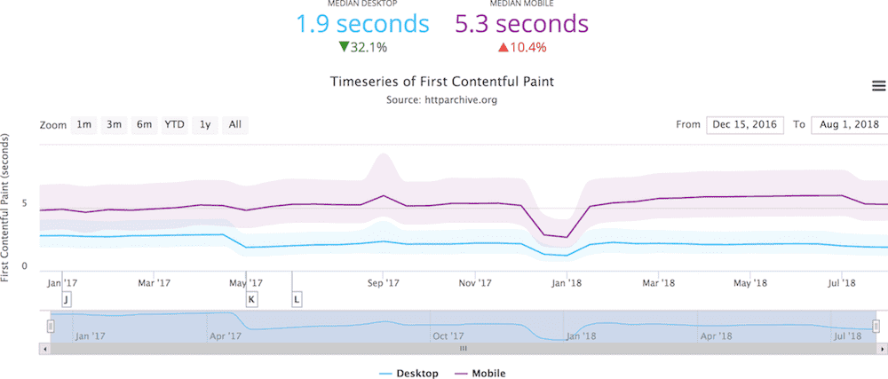
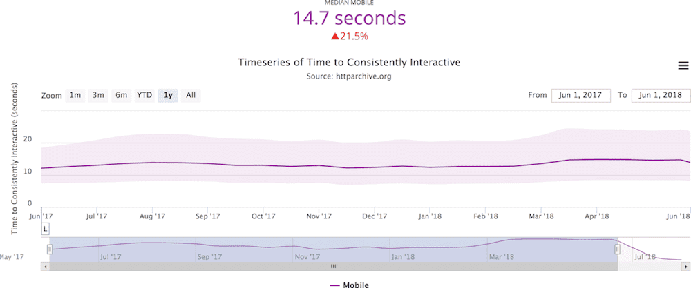
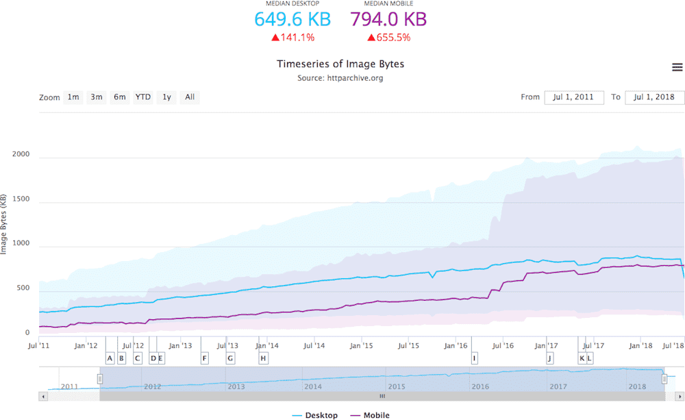
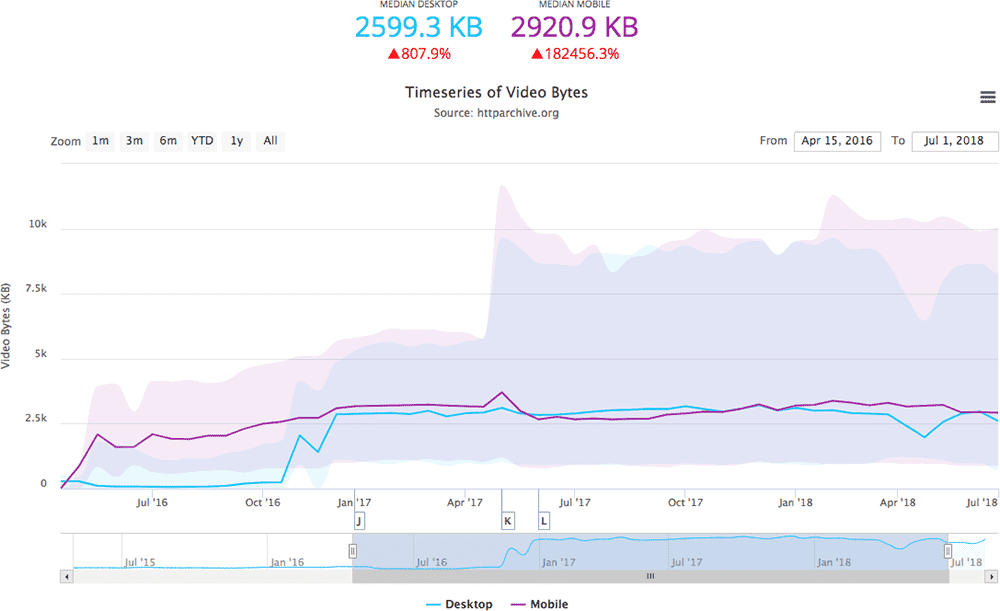

Slides about Slides
How do we reach the next billion people?
- They'll be virtually all be on mobile, with the norm being low-spec, low-cost devices
- They'll have low bandwidth connections with intermittent connectivity
- The connectivity they'll have is going to be expensive
- Layouts that aren't comfortably usable and graphics-heavy content will frustrate them, so they'll overlook it or avoid it.
Hey! This Sounds Familiar
You're Right!
First Contentful Paint
Time to Consistently Interactive
What can we do to reverse this trend?
🐼 Let's Talk About Slides!
😜
They so pretty, they move and groove, and they're entirely powered by this nifty little JavaScript presentation framework I cooked up (amusingly called Stage Fright).
Let's dive in to how Stage Fright was built to see what lessons we can pull for our day-to-day work!
🏞 Core Experiences
My process starts not at the individual tools or techniques used to develop, but at the the user experience that they enable
In fact, I specifically aim to not describe my experiences in terms of individual tools and techniques
By framing our work this way, we are able to come up with multiple solutions to a problem, instead of multiple iterations on the same solution
Design a Presentation Framework Better Way to Give Web-Based Presentations
The problems we're trying to solve form our core experiences, from which we can ideate on solutions, incorporating one or more of them together to solve our user's needs
🏗 Building from the Ground Up
As we start to ideate on our core experiences, I like to grade the solutions we come up with based on the core principles of Progressive Enhancement:
- What can we do with just HTML
- What can we do with just HTML and CSS
- Under what circumstances do we want to enhance our experience with JavaScript?
- What JavaScript do we need to enhance this experience?
- What breaks when we introduce CSS? JavaScript? Are we OK with that? Can we mitigate it?
Question:
What are the grades for a Slide Deck?
- Grade X
- Semantically marked up, HTML and CSS only linear "article" display. Display speaker notes in-line with content.
Requirements: HTML, CSS - Grade B
- Keep semantic markup, change CSS to lay out as individual slides, only display one slide at a time, advance slides on event. Hide speaker notes.
Requirements: Above, plus JavaScript, some form of JavaScript powered State - Grade A
- Provide remote control of slides and speaker-focused view (including speaker notes).
Requirements: Above, plus Presentation API
🌴 The Web's Roots
There are three groups of things I think about when writing HTML:
- Tag semantics, for which I still love HTML5 Doctor
- Accessibility, for which I reference Inclusive Components by Heydon Pickering, A11Y Nutrition Cards by Dave Rupert, Accessibility for Everyone by Laura Kalbag, and if I really need to dive in, the WAI-ARIA spec itself (it's mostly readable, I swear!)
- Microdata for SEO and semantic sharing, for which I turn to Schema.org
What does this look like for our Slide Deck?
<article class="_stage">
<header class="_stage--group">
<div class="_stage--slide">
<!-- Talk Title Goes Here -->
</div>
</header>
<section class="_stage--group">
<header class="_stage--slide">
<!-- Section Heading Goes Here -->
</header>
<div class="_stage--slide">
<!-- Content Goes Here -->
<aside class="_stage--notes">
<!-- Notes Go Here -->
</aside>
</div>
</section>
<article>We can finish up our Grade X experience by applying a base coat of responsive CSS to our markup, using the classes put in place, and adding more styling hooks as need.
🌭 Cutting the Mustard
From our baseline Grade X experience, we now want to enhance with JavaScript. Let's set the context for answering our question "what do we need" from JavaScript to enhance this experience
- Enumerate the language features that are required for our enhancement
- Determine what language features or APIs that would drastically cut down on custom code we need to write
- Consider what language features or APIs could reduce the cost of maintenance
- Weigh the above with the performance, maintenance, and tooling cost of transpiling and polyfilling
Cutting the Mustard is a Progressive Enhancement technique used to determine a baseline level where an experience will be enhanced from
Today, we can use JavaScript Modules to Cut the Mustard for ES2015+ Browsers
<script type="module" defer src="./mustard.js"></script>
<script nomodule defer src="./no-mustard.js"></script>
<!-- Can be done inline too -->
<script type="module">
import mustard from './mustard.js';
</script>
<script nomodule type="text/javascript">
console.log('No Mustard!');
</script>Our new modern JS baseline
constand partialletsupport- Promises and
asyncfunctions fetch- Arrow functions
- Proxy objects
- Rest parameters
- Classes
- Template literals
- Generators
- And, of course, JavaScript Modules
By combining our experience grading with Cutting the Mustard, a very neat thing happens; we're able to ship less JavaScript to both our higher-grade experience and our baseline experience, improving performance without compromising quality.
🎛 Progressive State Management
State is hard.
State managers, especially reactive ones like we're going to use, can help make it easier
- Keep all state in a single place
- Allow state updates to be published
- Allow components to subscribe to changes in state
CSS Tricks has a tutorial that is the basis for Stage Fright's state manager. It relies on JavaScript classes and Proxy Objects, so now that we've cut the mustard, we know we'll have those available to us!
Client-side hydration (rebuilding of state) can be really hairy, but it doesn't have to be! I've found a few tricks to ease the difficulty:
- Map out what will and won't change, and focus hydration only on what will
- Use semantic HTML and include the correct aria attributes and
data-*custom properties to hold information to make it easier to parse state and meta information - Meaningful classes can help identify meaning in HTML-independent ways
- Structure state to group related pieces together and ease access to update
Stage Fright's state is comprised of 6 items:
current- The current slide, as an item from our doubly-linked list
progress- The current progress indicator in our minimap
index- The slide index we're on
notes- The speaker note view if activated
presentation- The Presentation API connection, or
nullif it's not available (feature detection!) display- Current display state, either
presentationorarticleto facilitate swapping views
By determining just what we need hydrated, we can build our state really quickly.
This will get the JavaScript that we are running, running quickly!
🏎 Delivering It Quickly
One of the best ways to improve both First Contentful Paint and Time to Consistently Interactive is by only loading critical resources initially, and defer the rest
Our Critical CSS is the CSS we need to render our initial view. We want to inline this CSS in to our <head> so we don't need to make an additional request for it.
<link
rel="preload"
href="style.css"
as="style"
onload="this.onload=null;this.rel='stylesheet'">
<noscript><link rel="stylesheet" href="style.css"></noscript>
<script>
/*! loadCSS rel=preload polyfill. [c]2017 Filament Group, Inc. MIT License */
(function(){ ... }());
</script>What's This preload? What about prefetch?!
Because fonts are discovered late and loading them can block First Contentful Paint, we want to preload them too!
<link
rel="preload"
href="font.woff2"
as="font"
type="font/woff2"
crossorigin>We can do the same with our progressively-enhanced JavaScript modules!
<link
rel="preload"
href="mustard.js"
as="script" >
<!-- Bottom of our HTML -->
<script type="module" defer src="mustard.js"></script>
<script nomodule defer src="no-mustard.js"></script>Those pesky images tho
Don't forget about video!
IntersectionObserver allows to take action when an element is in the viewport! We can use this to do lazyloading!
const media = document.querySelectorAll('picture, img, video, audio');
if ('IntersectionObserver' in window) {
const observer = new IntersectionObserver(entries => {
entries.forEach(entry ==> entry.isIntersecting ? load(entry.target) : false);
});
media.forEach(m => observer.observe(m));
} else {
media.forEach(m => load(m));
}And offline too?
if ('serviceWorker' in navigator) {
window.addEventListener('load', () => {
navigator.serviceWorker.register('/sw.js');
});
};importScripts('path/or/cdn/to/workbox.js');
workbox.routing.registerRoute(
/\.(?:js|css)$/,
workbox.strategies.staleWhileRevalidate(),
);
workbox.routing.registerRoute(
/^https:\/\/fonts\.googleapis\.com/,
workbox.strategies.staleWhileRevalidate({
cacheName: 'google-fonts-stylesheets',
}),
);workbox.routing.registerRoute(
/\.(?:png|gif|jpg|jpeg|svg)$/,
workbox.strategies.cacheFirst({
cacheName: 'images',
plugins: [
new workbox.expiration.Plugin({
maxEntries: 60,
maxAgeSeconds: 30 * 24 * 60 * 60, // 30 Days
}),
],
}),
); 🎩 Putting It All Together
| R Response | A Animation | I Idle | L Load |
|---|---|---|---|
| Tap to paint in less than 100ms | Produce each frame in 10ms | Background functions are processed in 50ms chunks | <5000ms TTI on average mobile connection |
Code Splitting
🏡 Bringin' It Home
- Designing tool and technique agnostic core experiences to focus on our user's needs as opposed to just features
- Embracing progressive enhancement will allow us to deliver our core experiences regardless of browser or device
- Enhancing our experience by Cutting the Mustard enabling us to deliver modern JavaScript without transpiling
- Managing our application with a State Manager to coordinate state changes with minimal overhead
- Utilizing
preload,IntersectionObserver, Service Workers, and Code Splitting to speed up and inclemently deliver our experience